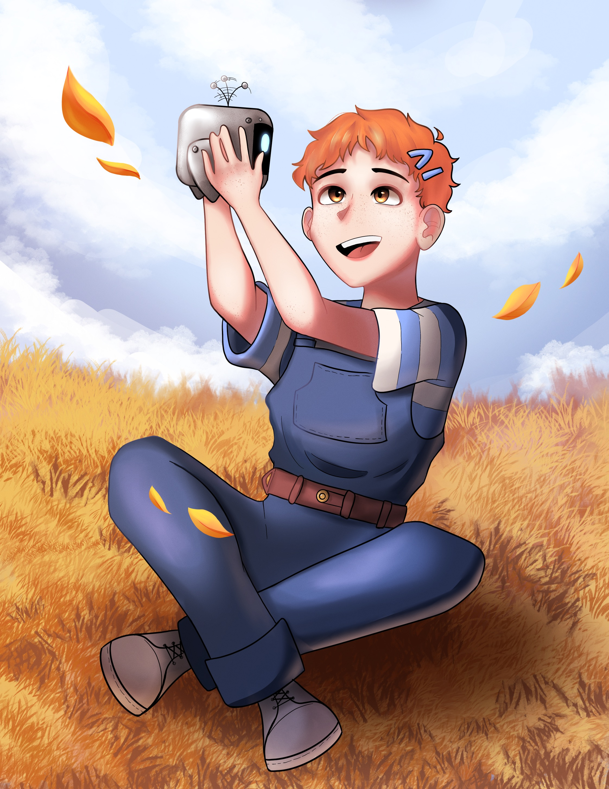

Emerson Lynch
Nickname: Em, IV, Four
Backstory
Emerson's father was an absent figure, neglecting Emerson and their accomplishments, leaving them to fend for themselves and seek knowledge independently. At the age of 7, Emerson attempted to gain their father's attention with their AI creation, DARWIN, but he remained indifferent and distant. One day, their father disappeared under mysterious circumstances, and since then, Emerson has taken on the persona of "IV," a figure rumored to possess all the information one could ever need.
Birthday: January 2nd
Age: 13
Height: 4'9
Abilities: none
